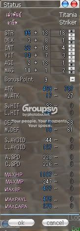
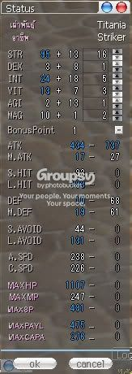
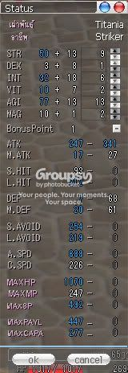
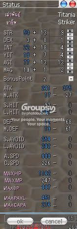

สวัสดีครับ นำ stat ของนักธนูในแต่ละแบบมาให้ดูครับ
คิดว่าคงมาช้าไปสำหรับผู้ที่ใช้สิทธิ์รีฟรีครั้งแรกไปแล้ว เพราะ ณ. ตอนนี้ npc รีสเตตัสคงโดนเอาออกไปแล้วด้วย
เอาเป็นว่าเผื่อคนที่เริ่มเล่นและกำลังตัดสินใจอยู่
ตัวผม เลเวล 65/33 (ตามรูปขณะนั้น) ถืออาวุธ strong bow เลเวล 60
สาย str. ล้วน


อันนี้เน้นไปที่ยิงแรงล้วนๆ กะเอานัดเดียวจอด เน้นไปที่ str มากที่สุด int เพื่อยิงโดน
และvit เล็กน้อย ที่เหลือไหลลง agi เพื่อให้ยิงเร็ว
ผลการทดสอบ : ลองยิงหุ่นเขียวในดันใต้มาความแรงไม่ต่างกับ str 88+13 เท่าไร
อาจจะเป็นเพราะ 95+13 ได้โบนัสแค่ค่า min atk. str ที่ควรจะเป็นคือ 98
สำหรับความสามารถเรื่องแรงยิงเป็นสิ่งที่นักธนูควรจะต้องมี
(ในอนาคตที่สามารถอัพเลเวลต่อได้ยังไงก็ต้องอัพ str จน 98 ครับ)
สาย agi


สายนี้ตอดเรื่อยๆ เน้นยิงไวได้ใจมาก จากสปีดการยิงที่ 688 ทำเอามอนเดินไม่ได้เลยทีเดียว
แต่ก็เปลืองลูกนูเป็นพิเศษเพราะต้องใช้ธนูหลายดอกมากกว่ามอนจะตาย
จะดูอัลก็เบา มัลติก็เบา
สเตตัสก็ชัดเจน agi นำ แล้วค่อยลง str
ผลการทดสอบ : จากการลองยิงหุ่นเขียวในดันใต้ขอบอกว่ายิงเข้าได้เบามาก
หลบได้บ้างไม่ได้บ้าง ยิ่งเจอเวทย์นี่ไม่ต้องสืบเลย โดนเต็มๆ
สำหรับผมการยิงเร็วถือว่าเจ๋งมากครับ แต่ถ้ายิงเร็ว+แรงด้วยจะเจ๋งยิ่งกว่า
แนะนำว่าการยิงเร็วยังไม่จำเป็นสำหรับการเก็บเลเวลในช่วงแรกๆ ครับผม
---------------------------------------------------------------------------------------------------------
stat ของผมณ. ตอนนี้
str - 88+13
int - 32+19 (เมื่อดูจากโบนัสเลเวล 40 ได้โบนัส +21 เลยคิดว่าจะรี int
ลดมาเหลือแค่ 29 ให้ int รวม 50 ก็พอ แล้วเอาสเตตัสไปลง agi แทน)
vit - 20+7
agi - 21+13 (ใช้หน้าไม้จะยิงช้าหน่อยนะครับ แต่กับธนูก็ไม่ช้าจนขี้เหร่)
atk. 410-683
ส่วนตัวนะครับ จากที่ได้ลองทั้งแรงและเร็ว นักธนูในความคิดผม str ต้องเต็มและมาก่อนสเตตัสอื่น
ส่วน agi ควรตามมาทีหลังแต่ถึงยังไงก็ต้องอัพจนเต็มเช่นกัน
ดังนั้นสำหรับคนที่เก็บเลเวลเอง ช่วง saga 3 นี้ควรจะเน้นไปที่ยิงนัดเดียวจอดไว้ก่อน
เพราะแม้จะลง agi ไปตอนนี้ก็ช่วยอะไรไม่ได้มาก ความสามารถในการหลบก็ไม่เท่าแอส
ยังไงก็โดนอัดอยู่ดี agi เอาแค่สามารถยกธนูขึ้นมายิงได้เร็วขึ้นก็พอครับ
สำหรับผม ผมเน้นดูอัลแอโร่ว์เอาเพราะประหยัดทั้งของกินและลูกธนู+สกิลไม่มีดีเลย์
ดูอัลล้วนๆ ผมยิงม้าขาว solar ดาเมจประมาณ 1100-1300
ส่วนมัลติเข้าดอกละ ~ 300-500 (โดนหมด 5 ดอกก็ *0*)
หรือ อีกสเต็ปนึงคือการใช้สัตว์ช่วย (แนะนำให้ฝึกสัตว์+อัพสกิล Hunting เต็มเลยครับ)
ให้ปล่อยสัตว์ไปแล้วยิงตามทันที ผมลองปล่อยนกแล้วดูอัลใส่ม้าขาว solar ดาเมจประมาณ 1300-1600
ถ้ายิงวืดไป 1 ดอก นกยังช่วยซ้ำให้ยังไงม้าขาวตายก่อนถึงตัวแน่ครับ
หรือจะไปยิงโจรขาวที่ฟูชิกิ (แมพนี้คนเยอะมาก+กระตุกมากๆ ด้วย)
- สเต็ปผมนะครับมัลตินำ (4-5 ดอก ดอกละ 400+) วิ่งถอยมานิดนึงเผื่อดีเลย์และระยะโจรวิ่ง
ตามด้วยชารจ์แอโร่ผลักโจรออกไปแล้วซ้ำด้วยมัลติอีกครั้ง โจรนอนครับ
**เคยลองปล่อยนกก่อนมัลติ ยิงแรงขึ้นจริงๆ ครับ แต่นกโดนโจรฟันก่อนตลอดคิดว่าไม่คุ้ม
เดี่ยวเองเลยดีกว่า ไม่ก็ไปฝึกนกให้หลบเก่งๆ แล้วค่อยใช้ก็ได้ครับ
** อีกวิธีลำบากหน่อยแต่ได้คุ้มเสียแน่ครับ สร้างอีกตัวเอาอาชีพที่มีสกิล soul ทั้งหลายมาสิงที่อาวุธแล้วออกเกมไปเลย
สเตตัสของตัวใหม่ให้ลงไปที่ str ล้วน แล้วเอามาสิงที่ธนูเราจะทำให้ยิงแรงขึ้น+ป้องกันธนูพังด้วย
ธนูเลเวล 60 ต้องเปิดร้านเจ้าหญิงในอันเดด แถมระบบมันสุ่มอีก (จริงๆ คือ ขี้เกียจทำ แหะๆ )
หวังว่าคงมีประโยชน์สำหรับผู้ที่ยังไม่แน่ใจว่าจะเล่นแบบไหนดี
แต่ทั้งนี้ทั้งนั้นไม่ได้ต้องการให้มาเล่นแบบผมหมดนะครับ ลองเก็บข้อมูลจากหลายๆ แหล่ง
แล้วเอามาประยุกต์ให้เข้ากับแนวทางที่ตัวเองต้องการจะดีกว่าครับ